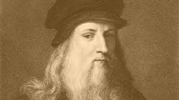
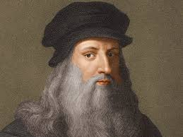
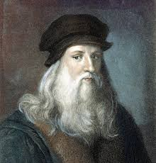
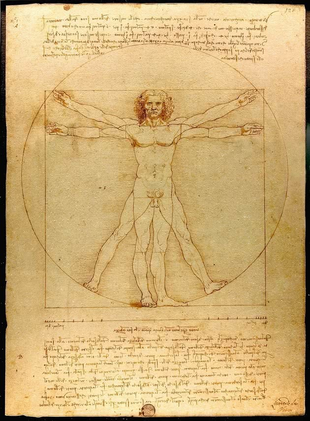
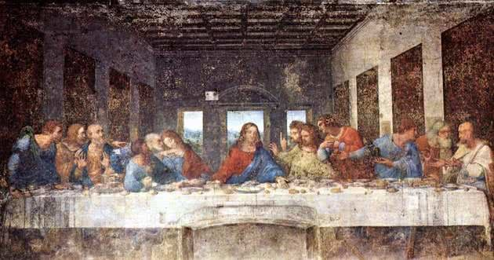
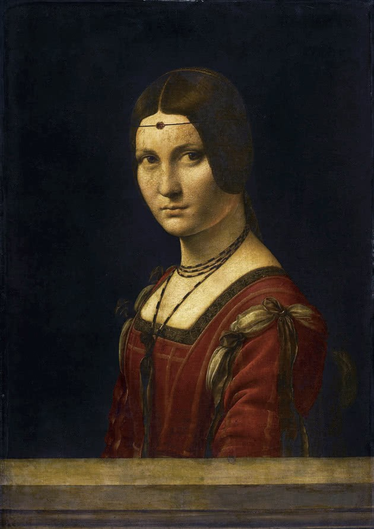

Leonardo da Vinci



Leonardo di ser Piero da Vinci, el gran artista del Renacimiento, modelo del uomo universale, fue también un genio científico. Aparte de su obra pictórica, tan exquisita como escasa, hubo un Leonardo dedicado a la observación rigurosa, el experimento y la formulación exacta de principios generales a partir de la experiencia empírica. En los miles de páginas de sus cuadernos de notas, que sólo han empezado a ser estudiados a fondo en las últimas décadas, encontramos anticipaciones de muchos desarrollos posteriores de la ciencia moderna. Sus contemporáneos sabían que Leonardo dedicaba buena parte de su tiempo al estudio de la filosofía natural, que es como se llamaba a la ciencia entonces (el término inglés scientist no apareció hasta 1840) y asimismo tenemos constancia de que Leonardo planeaba publicar numerosos tratados científicos con los materiales recogidos en sus cuadernos. Pero pese a su enorme dedicación, nunca consiguió llevar a buen término su propósito.
Hombre vitruvino

Hacia el año 1487 o 1490, Leonardo creó el llamado Hombre vitruviano, un dibujo en tinta sobre papel de dos figuras masculinas superpuestas con brazos y piernas separadas dentro de un círculo y un cuadrado.
El dibujo está acompañado de notas basadas en la obra del famoso arquitecto romano Marco Vitruvio Polión. Es considerado un estudio de las proporciones y una perfecta yuxtaposición entre ciencia y arte, así como uno de los trabajos más significativos del artista, científico e inventor Leonardo da Vinci.
La anunciación

Pintada entre los años 1472 y 1475, La anunciación es un cuadro al óleo sobre madera que representa los primeros pasos de Leonardo en la pintura, a pesar de que no todos concuerdan con el veredicto.
El cuadro estuvo "escondido" en un monasterio hasta 1867 cuando fue trasladado a la Galleria degli Uffizi, en Florencia. Fue atribuido inicialmente a Domenico Ghirlandaio, pintor contemporáneo a Leonardo e igualmente aprendiz en el taller de Verrocchio.
La última cena

La última cena es una pintura mural ejecutada por Leonardo da Vinci entre los años 1493 y 1498. Se encuentra en la pared del comedor del Convento de Santa Maria Delle Grazie en Milán.Esta es la obra que le dará notoriedad al artista. Pero lamentablemente, debido al hecho de que Leonardo aplicó una técnica poco ortodoxa que comprometería su durabilidad. Mezcló así las técnicas del temple y el óleo sobre capas de yeso en un enlucido.
La Mona Lisa

También conocida como La Gioconda, La Mona Lisa es un óleo sobre madera pintado por Leonardo entre 1503 y 1506. La pintura es un retrato de Mona Lisa, la joven esposa de Franceso de Giocondo, según el testimonio de Giorgio Vasari (1511-1574), pintor, arquitecto, y biógrafo de varios artistas del Renacimiento italiano.La obra fue adquirida por Francisco I, rey de Francia desde 1515 hasta 1547. En 1911 la pintura fue robada y se recuperó dos años después, en 1913.
La Belle Ferronière

Pintada entre 1490 y 1495, La Belle Ferronière es también un óleo sobre madera. La figura representada es una mujer desconocida, hija o esposa de un herrero.